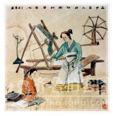

孟轲

古时候，有个学问家叫孟轲。他刚上学的时候，很用心，写字一笔一划，很工整。不久，他觉得学习太辛苦，不如在外面玩耍快活。于是，他逃学了，常到山坡上树林中去玩，好开心啊！ 一天，他回到家里，正在织布的妈妈问他：“怎么这么早就放学了？”他只好承认逃学了。妈妈生气地说：“我辛辛苦苦织布供你读书，你却逃学，太没出息了！”小孟轲连忙给妈妈跪下。 妈妈拿起剪刀，一下子把没织完的布剪断了，说着：“你不好好读书，就像这剪断的布，还有什么用处！” 小孟轲哭着说：“我错了！今后再也不贪玩了。我一定好好读书！”从此，小孟轲勤奋学习，从不偷懒。后来他成了着名的大思想家。